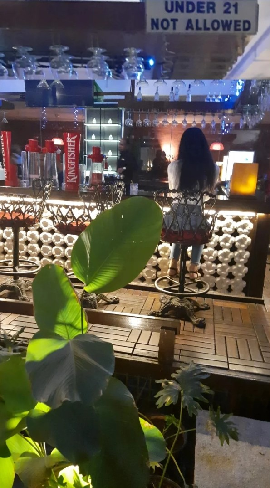

I read somewhere that the human brain has an average of 50,000 thoughts in a day. Here’s a thought, what if we could get a list of these thoughts in the mail the next day? This is how I would receive the mail then. Candidate: Aditi. Day: 9496. Brain activity percentage: 20% Twentyyyyyyy!?!? I spent twenty years in this world and H O W. How to even process thisss???!! This 2’s series is going to have me become independent and responsible (or not :P), live away from aai baba , cook , clean , work and go through newer and bigger experiences each day and… and…….. also nearing death by one more year(hahaha) if that doesn’t sound crazy. Will I be able to do it? Can I cook anything besides Maggi? Do I even know how to take care of myself? Am I ready for any of this? Will I ever be ready? AYE what you thinking about bro wake uppp lecturesss. Yaar ye MC khatam kyu nahi hota?? (MC=subject.) ye sharada ma’am ko toh kisiko sulane ka award hi mil jaye. So hi jau kya? Attendance toh ye vaise bhi nahi leti. Yaar such cute stories man. Acha hi hua all of y’all came yesterday. Pappi to all of y’all. ayy fuxk internship. exam. 6. ok. Done. My back. aaargghh. I am balding. Effectively. Livon kidhar gaya yaar. Use it fast don’t wait till it gets hot and burns the shit out of your hair. Chalo looks straight enough. *goes out with aai baba* Should I click a picture near this bar counter? It looks so aesthetic yaar. Aai marel. jaude. Amey la sangu ka? Toh tar aaiknarach nahi. Staring at my phone in the car makes me dizzy. *back home* “How to remove lenses easily tutorial” ok. touch. Don’t wink. pull sideways. Pinch. Pull it out – arey wait na don’t wink. pull. Aditi wait don’t fucking wink yaarr. pull. hashhh. Ab dusra.
“P.S – I know I said that an average person has about 50,000 thoughts in a day and these are just 99. Enjoy you get to see these at least.”
But on a heavier note I remember when I was becoming 18 (an aDuLt) similar kind of fear ran my mind like it did when I just woke up. Every year these numbers bring the added responsibility of at least taking care of yourself and clearly I have been doing a very stupid job at it. Well I still did manage to do some of my “after adult duties” like getting a driving license and all those cards and shit , But had I matured enough for 18?? When I was in school , college fascinated me. The idea of not having to wear uniforms , using phones , not wearing those headache giving hairbands felt intriguing and tbh my college and undergrad did turn out exactly like I wanted. But dear “NIS” sometimes all I think about is youuu. So basically when I was a teen I longed to be an adult and now that I’m an adult it’s always a new episode of “chaunk gaye?” Now I realize that before writing this I never really sat down and allowed all of this to sink in. It was just a series of “life goes on and onnn!” (My reel references just don’t stop but the only way to take them out of your head is to sing them, so scream sorry sInG) Ahhhh. My back! Heeeeehhhghh. Does everyone have back pain like me? Is this what growing up is? Haha maybe. Anywaysss….. Alarm is set. Day was happy. Life is great. Good night world.
Well, aai did click a picture. #Breaktherules